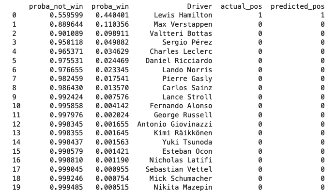

Capstone Project, Part 4: Presentation #### F1 Race Winner Prediction  Jose Reyes
  #### Problem Statement: - predict the winner of a 2021 season race - identify the strongest factors that contribute to winning a race - explore and compare with other machine learning models
  #### Data collection: - motor racing API [ergast.com](http://ergast.com/mrd/) - weather data scraped from [Wikipedia](https://en.wikipedia.org/wiki/2021_Abu_Dhabi_Grand_Prix) - F1 domain information from [F1 Metrics](https://f1metrics.wordpress.com/) - Official [Formula 1](https://www.formula1.com/) website
  #### Data preparation: - read [ergast.com](http://ergast.com/mrd/) API, and persist in [Mongo DB](https://www.mongodb.com/) - [Beautiful Soup](https://beautiful-soup-4.readthedocs.io/en/latest/) and [Selenium](https://www.selenium.dev/) for extracting race weather data - [Exploratory Data Analysis](http://localhost:8888/lab/tree/data-science/datr27_projects/final-project-part2-brief.ipynb)
  #### [Feature Engineering](http://localhost:8888/lab/tree/data-science/datr27_projects/final-project-part3-technical-notebook.ipynb#feature_eng): - driver experience (veterans vs rookies) - driver recent form (fix scoring for all drivers) - driver recent wins (rolling window recent wins) - driver age (younger drivers wins more races) - driver recent DNFs - home circuit advantage - weather effects
  #### Machine Learning modelling: - regression or classification? - we want to predict the race winner - we also want to predict the finishing order - Train/Test split?
  #### Regression approach:
  #### Classification approach: 
  #### Feature Importance:
  #### Champion/Challenger Summary:
  #### Champion/Challenger Chart:
  #### Champion Model: - [Bagging Regressor](https://scikit-learn.org/stable/modules/generated/sklearn.ensemble.BaggingRegressor.html) ([Decision Tree Regressor](https://scikit-learn.org/stable/modules/generated/sklearn.tree.DecisionTreeRegressor.html?highlight=decisiontree#sklearn.tree.DecisionTreeRegressor)) - Train time: 0.97s - Test time: 0.42s - Precision score: 66.67% - Correctly predicting the winner in 14 out of 21 races in 2021 Season
  Capstone Project, Part 4: Presentation #### F1 Race Winner Prediction  THANKS!